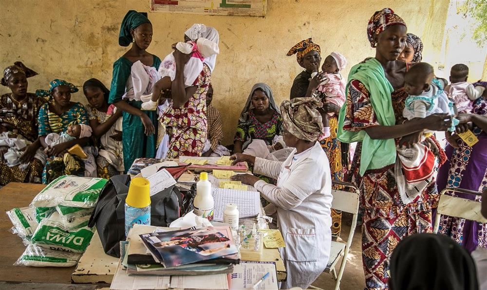

Good news at last: the world isn’t as horrific as you think
Training yourself how to put the news into perspective – practising ‘factfulness’ – will change your outlook for the better

Illustration by Sébastien Thibault
Things are bad, and it feels like they are getting worse, right? War, violence, natural disasters, corruption. The rich are getting richer and the poor are getting poorer; and we will soon run out of resources unless something drastic is done. That’s the picture most people in the west see in the media and carry around in their heads.
I call it the overdramatic worldview. It’s stressful and misleading. In fact, the vast majority of the world’s population live somewhere in the middle of the income scale. Perhaps they are not what we think of as middle class, but they are not living in extreme poverty. Their girls go to school, their children get vaccinated. Perhaps not on every single measure, or every single year, but step by step, year by year, the world is improving. In the past two centuries, life expectancy has more than doubled. Although the world faces huge challenges, we have made tremendous progress.
The overdramatic worldview draws people to the most negative answers. It is not caused simply by out-of-date knowledge. My experience, over decades of lecturing and testing, has finally brought me to see that the overdramatic worldview comes from the very way our brains work. The brain is a product of millions of years of evolution, and we are hard-wired with instincts that helped our ancestors to survive in small groups of hunters and gatherers. We crave sugar and fat, which used to be life-saving sources of energy when food was scarce. But today these cravings make obesity one of the biggest global health problems. In the same way, we are interested in gossip and dramatic stories, which used to be the only source of news and useful information. This craving for drama causes misconceptions and helps create an overdramatic worldview.
We still need these dramatic instincts to give meaning to our world. If we sifted every input and analysed every decision rationally, a normal life would be impossible. Just as we should not cut out all sugar and fat, we should not ask a surgeon to remove the parts of our brain that deal with emotions. But we need to learn to control our drama intake.
It is absolutely true that there are many bad things in this world. The number of conflict fatalities has been falling since the second world war, but the Syrian war has reversed this trend. Terrorism too is rising. Overfishing and the deterioration of the seas are truly worrisome. The list of endangered species is getting longer. But while it is easy to be aware of all the bad things happening in the world, it’s harder to know about the good things. The silent miracle of human progress is too slow and too fragmented to ever qualify as news. Over the past 20 years, the proportion of people living in extreme poverty has almost halved. But in online polls, in most countries, fewer than 10% of people knew this.
Our instinct to notice the bad more than the good is related to three things: the misremembering of the past; selective reporting by journalists and activists; and the feeling that as long as things are bad, it’s heartless to say they are getting better. For centuries, older people have romanticised their youths and insisted that things ain’t what they used to be. Well, that’s true. Most things used to be worse. This tendency to misremember is compounded by the never-ending negative news from across the world.
Stories about gradual improvements rarely make the front page even when they occur on a dramatic scale and affect millions of people. And thanks to increasing press freedom and improving technology, we hear about more disasters than ever before. This improved reporting is itself a sign of human progress, but it creates the impression of the exact opposite. At the same time, activists and lobbyists manage to make every dip in an improving trend appear to be the end of the world, scaring us with alarmist exaggerations and prophecies. In the United States, the violent crime rate has been falling since 1990. But each time something horrific or shocking happened – pretty much every year – a crisis was reported. The majority of people believe that violent crime is getting worse.
My guess is you feel that me saying that the world is getting better is like me telling you that everything is fine, and that feels ridiculous. I agree. Everything is not fine. We should still be very concerned. As long as there are plane crashes, preventable child deaths, endangered species, climate change sceptics, male chauvinists, crazy dictators, toxic waste, journalists in prison, and girls not getting an education, we cannot relax. But it is just as ridiculous to look away from the progress that has been made. The consequent loss of hope can be devastating. When people wrongly believe that nothing is improving, they may lose confidence in measures that actually work.
It is just as ridiculous to look away from the progress. The consequent loss of hope can be devastating
How can we help our brains to realise that things are getting better? Think of the world as a very sick premature baby in an incubator. After a week, she is improving, but she has to stay in the incubator because her health is still critical. Does it make sense to say that the infant’s situation is improving? Yes. Does it make sense to say it is bad? Yes, absolutely. Does saying “things are improving” imply that everything is fine, and we should all not worry? Not at all: it’s both bad and better. That is how we must think about the current state of the world.
Take girls’ education. When women are educated, the workforce becomes diversified and able to make better decisions. Educated mothers have fewer children, and more survive. More energy is invested in each child’s education: a virtuous cycle of change. Ninety per cent of girls of primary school age attend school; for boys, it’s 92%. There are still gender differences when it comes to education in the poorest countries, especially in secondary and higher education, but that’s no reason to deny the progress that has been made.

A vaccination session at the Baraouéli health centre in Baraouéli, Ségou region, Mali. Photograph: Unicef/UN/Keïta
Remember that the media and activists rely on drama to grab your attention; that negative stories are more dramatic than positive ones; and how simple it is to construct a story of crisis from a temporary dip pulled out of its context of a long-term improvement. When you hear about something terrible, calm yourself by asking: if there had been a positive improvement, would I have heard about that? Even if there had been hundreds of larger improvements, would I have heard?
This is “factfulness”: understanding as a source of mental peace. Like a healthy diet and regular exercise, it can and should become part of people’s daily lives. Start to practise it, and you will make better decisions, stay alert to real dangers and possibilities, and avoid being constantly stressed about the wrong things.
• Hans Rosling was a Swedish physician, academic and statistician, who died in 2017. This is an edited excerpt from his posthumously published book Factfulness: Ten Reasons We’re Wrong about the World – and Why Things Are Better Than You Think (Sceptre), written with Ola Rosling and Anna Rosling Rönnlund